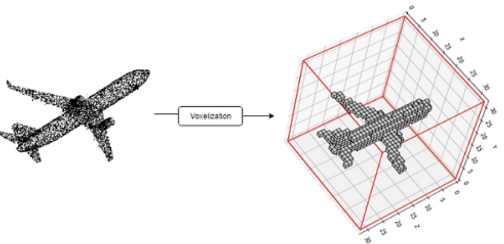

A Point Cloud is a set of points in 3D space which can represent the boundary or the whole object (including inside points). In a point cloud, the points are unordered and are not restricted by any grid which means a point cloud can be expressed in an infinite way (using translation). Each point can have 3D coordinates and feature vectors. .
Properties of Point Cloud in $\mathbb{R}^3$
Unordered: Unlike images or arrays, point cloud is unordered. It has no restriction to be confined within a boundary. This causes a problem for CNN type architecture to learn since CNN uses convolutional operations which requires ordered and regular array like representation of the input. Point cloud networks are generally invariant to the $N!$ number of permutations in input.
Irregularity: Points are not sampled uniformly from an image which means different objects can have dense points while others sparse [2, 1]. This sometimes causes class imbalance problems in point cloud dataset.
Connectedness: Since points are not connected like graph structure and neighbouring points contain meaningful spatial and geometry information of the object, networks must learn to pass information from points to points.
2. Point Cloud Generation Methods
Point clouds are generated by 3D Scanners like time-of-flight sensors and depth cameras or photogrammetry software. Time-of-flight sensors use the reflected laser beams from sensors to the object to capture the surface of the object.
3. Point Cloud Sampling Methods
Point Cloud Sampling is the method of choosing a subset of point clouds. Sampling methods were used in segmentation model to reduce the number of points for faster learning [RandLa-Net]. This is an essential step in the large-scale point cloud processing, since learning features for all the points can be time consuming. Instead, features can be learnt for small point clouds and for other points, it can be aggregated using neighboring features. There are different sampling algorithms available. Let $N$ be the number of points, $M$ is the sampled number of points chosen with $N>M$, $D$ is the maximum number of points in a 3D voxel grid ($N>>D$) and $K$ is the number of nearest neighbour($N>>K$).
$\textbf{1. Heuristic Sampling}$
Grid Sampling: In Grid Sampling, a 3D voxel grid is used over the point cloud and each occupied voxels extract one point based on averages or most frequently occurring classes. This sampling results in a uniform sample. The time complexity of the grid sampling is $O(ND)$. By averaging the points on the surface, grid sampling loses smooth boundary information.
Random Sampling: One of the simplest sampling methods, Random Sampling takes $M$ random points from a point cloud of $N$ points ($N>M$). Time complexity is $O(M)$ which makes it efficient to use in large-scale point cloud networks.
Farthest Point Sampling(FPS): It iteratively extracts set of points $P=\{p_1,p_2,\cdots,p_M \}$ such that $p_j$ is the farthest point from the first $j-1$ points in $P$. The time complexity is $O(M^2N)$ which makes it unsuitable for large scale point cloud processing.
Inverse Density Importance Sampling: In IDIS, density is calculated for every point by adding the distance between the point and its nearest neighbors. $density(x)=\sum_{y\in KNN(x)} \lVert x-y \rVert_2^2$. So $N$ points are reordered according to the inverse of the density and top $M$ points are selected which means lower density points are more likely to be chosen than high dense points. Time complexity is $O((K+N)logN)$. This sampling can control density but is sensitive to outliers and noise.
$\textbf{2. Learning Based Sampling}$
Generator Based Sampling: Generator Based Sampling(GS) learns to generate a small subset of point clouds from the original point cloud. For a point cloud set $P$ and a task $T$, GS tries to find $S \subset P$ by minimizing the objective function $f$ such that $S^*=argmin_{S}(f(T(S))$. It is an end-to-end trainable model. But at inference stage, it uses FPS to match subsets with original point cloud. It takes up to 20 minutes to sample 10% of $10^6$ points.
Gumbel Subset Sampling: Gumbel Subset Sampling[4] uses attention mechanism to choose a representative and task-specific subset of the point cloud. Given an input set $X_i \in \mathbb{R}^{N_i\times c}$, the task is to choose a suitable $X_{i+1} \in \mathbb{R}^{N_{i+1}\times c}, N_{i+1} \leq N_i$ and $X_{i+1}=y\cdot softmax(WX_i^T), W \in \mathbb{R}^{N_{i+1}\times N_i}$. It is completely end-to-end learnable and can be used in any segmentation network.
4. Point Cloud Segmentation Methods
Point Cloud Segmentation is the task for grouping objects or assigning labels to every points in the point cloud. It is one of the most challenging tasks and a research topic in deep learning since point clouds are noisy, unstructured and lack connectedness property. All the methods are categorized into four categories.
4.1 Edge Based Methods
Edges describe the intrinsic characteristics of the boundary of any 3D object. Edge-based methods locate the points which have rapid changes in the neighborhood. Bhanu[1] proposed three approaches for detecting the edges of a 3D object. The first approach is calculating the gradient.
Let $r(i,j)$ be the range value at $(i,j)$ position, the magnitude and the direction of edge can be calculated by
\begin{equation}
\begin{split}
& m(i,j:0)=\frac{r(i,j-k)+r(i,j+k)-2r(i,j)}{2k}\\
& m(i,j;45)=\frac{r(i-k,j+k)+r(i+k,j-k)-2r(i,j)}{2k\sqrt2}\\
& m(i,j;90)=\frac{r(i-k,j)+r(i+k,j)-2r(i,j)}{2k}\\
& m(i,j;135)=\frac{r(i-k,j-k)+r(i+k,j+k)-2r(i,j)}{2k\sqrt2}
\end{split}
\end{equation}
For flat surfaces these values are zero, positive when edges are convex and negative when edges are concave. The maximum magnitude of gradient is $\max m(i,j;\theta)$ and the direction of edge is $argmax_{\theta}$ $m(i,j;\theta)$. Using threshold, points can be segmented.
The second approach is fitting 3D lines to a set of points(i.e neighboring points) and detecting the changes in the unit direction vector from a point to the neighboring points. The third approach is a surface normal approach where changes in the normal vectors in the neighborhood of a point determine the edge point. Edge models are fast and interpretable but they are very sensitive to noise and sparse density of point clouds and lack generalization capability. Learning on incomplete point cloud structure with edge-based models does not give good accuracy. In Medical image datasets especially MRI data, the organ boundaries sometimes do not have high gradient points compared to CT data which means for every modality, we have to find new thresholds in edge-based methods.
4.2 Region Based Methods
Region-based methods use the idea of neighborhood information to group points that are similar thus finding similarly grouped 3D objects and maximizing the dissimilarity between different objects. Compared to edge-based methods, these methods are not susceptible to noise and outliers but they suffer from inaccurate border segmentation. There are two types of region-based methods.
Seeded-region Methods(bottom up): Seeded region segmentation is a fast, effective and very robust image segmentation method. It starts the segmentation process by choosing manually or automatically in preprocessing step, a set of seeds which can be a pixel or a set of pixels and then gradually adding neighbouring points if certain conditions satisfy regarding similarity[1,5]. The process finishes when every point belongs to a region.
Suppose there are N seeds chosen initially. Let $A=\{A_1,A_2,\cdots,A_N\}$ be the set of seeds. Let T be the set of pixels that are not in any $A_i$ but is adjacent to at least a point in $A_i$.
where $nbr(x)$ is the neighbourhood points of x. At each step if $nbr(x) \cap A_i \neq \phi$, then x is added into the region if certain conditions are met. One such condition can be checking the difference between intensity value of $x$ with the average intensity value of $A_i \forall A_i \text{ such that } nbr(x) \cap A_i \neq \phi$. The region with minimum difference is assigned to the point. There are another method when greyvalues of any point is approximated by fitting a line i.e if a coordinate of any pixel/point $p$ is $(x,y)$, then greyvalue of $p$, $G(p)=b+a_1x+a_2y+\epsilon$, where $\epsilon$ is the error term. The new homogeneity condition is to find the minimum distance between average approximated greyvalue and the approximated greyvalue of $x$.
Seeded-based segmentation is very much dependent upon the choice of seed points. Inaccurate choices often lead to under-segmentation or over-segmentation.
Unseeded-region Methods(top-down): Unlike seeded-based methods, unseeded methods have a top-down approach. The segmentation starts with grouping all the points into one region. Then the difference between all the mean point values and chosen point value is calculated. If it is more than the threshold then the point is kept otherwise the point is different than the rest of the points and a new region is created and the point is added into the new region and removed from the old region. The challenges are over-segmentation and domain-knowledge which is not present in complex scenes[1].
4.3 Attribute Based Methods
Attribute-based methods use the idea of clustering. The approach is to calculate attributes for points and then use a clustering algorithm to perform segmentation. The challenges in these methods are how to find a suitable attribute that contains the necessary information for segmentation and to define proper distance metrics. Some of the attributes can be normal vectors, distance, point density, or surface texture measures. It is a very robust method but performs poorly if points are large-scale and attributes are multidimensional.[1]
4.4 Deep Learning Based Methods
The main challenge in point cloud segmentation is find good latent vector which can contain sufficient information for segmentation task. Deep Learning methods offers the best solution to learn good representations. Neural networks being a universal approximator can theoretically approximate the target function for segmentation. The following theorem justifies how MLPs can approximate the function for the segmentation task given enough neurons.
Theorem 1: Given a set of point clouds $X=\{\{x_1,x_2,\cdots,x_n\},n\in \mathbb{Z}^+,x_i \in [0,1]^m\} $, let $f:X \rightarrow R$ be a continuous function with respect to hausdorff distance($d_H(\cdot,\cdot)$).$\forall \epsilon > 0, \exists \eta,$ a continuous function and a symmetric set function $g(x_1,x_2,\cdots x_n)=\gamma \circ MAX$ such that $\forall S\subset X$.
$\gamma$ is a continuous function and $MAX$ is an elementwise max operation which takes an input $k$ number of vectors and return a vector with element wise maximum. In practice $\gamma \text{ and } \eta$ are MLP [2].
Proof: The hausdorff distance is defined by
Since $f$ is a continuous function from $Y$ to $R$ w.r.t hausdorff distance, so by definition of continuity $\forall \epsilon > 0, \exists \delta_{\epsilon} > 0 $ such that if $S_1,S_2 \subset X$ and $d_H(S_1,S_2)<\delta_{\epsilon}$, then $|f(S_1)-f(S_2)|<\epsilon$.
Let $K=\lceil {\frac{1}{\delta_\epsilon}}\rceil, K\in \mathbb{Z}^+$. So $[0,1]$ is evenly divided into K intervals. Let $\sigma(x)$ be defined by
So $\sigma$ maps a point to the left side of the interval it belongs to and
Let $\tilde{S}={\sigma(x)},x\in S$, then Since $d_H(S,\tilde{S})\leq \delta_\epsilon.$
Let $\eta_k(x)=e^{-d(x,[\frac{k-1}{k},\frac{k}{K}])}$ be the indicator function where $d(x,I)$ is the point to set distance $d(x,I)=0$, if $x\in I$, so $\eta_k(x)=1 \text{ if } x \in [\frac{k-1}{k},\frac{k}{K}].$
Let $\eta(x)=[\eta_1(x);\eta_2(x);\cdots;\eta_n(x)]$. Since there are K intervals we can define K functions $v_j:\mathbb{R}^n \rightarrow \mathbb{R}, \forall j=1,\cdots,K$ such that <
So $v_j$ denotes if any points from $S$ occupy the $jth$ interval. Let $v=[v_1;v_2,\cdots,;v_n]$. So $v:R^n\rightarrow [0,1]^K$.
Let $\tau:[0,1]^K \rightarrow X$ be defined by
So $\tau$ denotes the lower bound of any interval if it contains any point from $S$. In this respect, $\tau(v) \equiv \tilde{S}$. Let $range(\tau(v))=S_{\tau}, d_H(S_{\tau},S)<\frac{1}{K} \leq \delta_{\epsilon}$
Let $\gamma:\mathbb{R}^K \rightarrow R$ be a continuous function such that $\gamma(v)=f(\tau(v))$.Now
So $f$ can be approximated by a continuous($\gamma$) and a symmetric function($MAX$).In practice, $\gamma \text{ and } \eta$ can be approximated by MLP.
The DL methods for point cloud segmentation can be divided into following ways.
Projection-Based Networks: Following the success of 2d CNNs, projection-based networks use the projection of 3D point clouds into 2d images from various views/angles. Then 2D CNN techniques are applied to it to learn feature representations and finally features are aggregated with multi-view information for final output [6,7]. In [8], tangent convolutions are used. For every point, tangent planes are calculated and tangent convolutions are based on the projection of local surface geometry on the tangent plane. This gives a tangent image which is an $l\times l$ grid where 2d convolutions can be applied. Tangent images can be computed even on a large-scale point cloud with millions of points. Compared to voxel-based models, multi-view models perform better since 2D CNN is a well-researched area and multi-view data contain richer information than 3D voxels even after losing depth information. The main challenges in multi-view methods are the choice of projection plane and the occlusion which can affect accuracy.
Voxel-Based Networks:$Voxel-based methods convert the 3D point clouds into voxel-based images. Figure [1] shows an example. The points which make up the point cloud are unstructured and unordered but CNN requires a regular grid for convolution operation.

Figure 1: Voxelization of a point cloud (Image from [9])
Voxelization is done in the following steps.
A bounding box of the point cloud is calculated which defines the entire space that is to be divided.
Then the space is divided into a fixed-size grid. Each grid is called 3D cuboids.
The point cloud is divided into different grids with each 3D cuboid containing several points and these 3D cuboids become voxels that represent the subset of points.
Features are calculated from the subset of points inside a voxel.
Voxelization creates quantization artifacts and loses smooth boundary information. It is a computationally expensive preprocessing step and memory footprints increase cubically due to the cubical growth of voxels. If voxel resolution is low, many points will belong to a voxel and will be represented by a single voxel so these points will not be differentiable . A point is differentiable if it exclusively occupies one voxel grid. Figure 2 summarizes the memory requirements for if we want to retain higher number of differentiable points which will mean lower information loss [9]. To retain 90% of the differentiable points, GPU memory is more than 82 GB and voxel resolution is $128 \times 128 \times 128$ which is a huge computational overload.
Figure 2: Voxelization and memory footprint (Image from [9]))
After voxelization, 3D CNNs can be applied for learning features for segmentation (3d UNet). In a similar approach, Point-Voxel CNN [9] uses CNN and MLP bases fusion learning. It first voxelizes the point cloud and uses convolution for feature learning and then devoxelize the voxels for voxel-to-point mapping(i.e interpolation is used to create distinct features of a voxel for the points that belong to the voxel). The features of a point cloud are then aggregated with the features learned using MLP. Despite its remarkable advances in segmentation tasks in the medical domain in segmentation tasks, 3D CNNs have a lot of parameters and is computationally expensive. Reducing the input size causes the loss of important information. 3DCNN also requires a large number of training samples.
Point-Based Networks: Point-Based Networks work on raw point cloud data. They do not require voxelization or projection. PointNet is a breakthrough network that takes input as raw point clouds and outputs labels for every point. It uses permutation-invariant operations like pointwise MLP and symmetric layer, Max-Pooling layer for feature aggregation layer. It achieves state-of-the-art performance on benchmark datasets. But PointNet lacks local dependency information and so it does not capture local information. The max-pooling layer captures the global structure and loses distinct local information. Inspired by PointNet many new networks are proposed to learn local structure. PointNet++ extends the PointNet architecture with an addition of local structure learning method. The local structure information passing idea follows the three basic steps (1) Sampling (2) Grouping (3) Feature Aggregation Layer (Section 3.3.1.E lists some Feature Aggregation functions) to aggregate the information from the points in the nearest neighbors. Sampling is choosing $M$ centroids from $N$ points in a point cloud ($N>M$). Random Sampling or Farthest Point Sampling are two such methods for sampling centroids. Grouping refers to sample representative points for a centroid using KNN. It takes the input (1) set of points $N\times(d+C)$, with $N$ is the number of points,$d$ coordinates and $C$ feature dimension and (2) set of centroids $N_1\times d$. It outputs $N_1\times K \times (d+C)$ with $K$ is the number of neighbors. These points are grouped in a local patch. The points in the local patches are used for creating local feature representation for centroid points. These local patches work like receptive fields. Feature Aggregation Layer takes the feature of the points in the receptive field and aggregate them to output $N_1\times(d+C)$. This process is repeated in a hierarchical way reducing the number of points as it goes deeper. This hierarchical structure enables the network to be able to learn local structures with an expanding receptive field. Most of the research in this field has gone into developing an effective feature aggregation layer to capture local structures. PointWeb creates a new module Adaptive Feature Adjustment to enhance the neighbor features by adding the information about the impact of features on centroid features and the relation between the points. It then combines the features and uses MLP to create new representations for centroid points. Despite their initial successes the following methods achieve higher performance due to their advanced local aggregation operators.
Zhijian Liu, Haotian Tang, Yujun Lin, Song Han.
Point-Voxel CNN for Efficient 3D Deep Learning. Proceedings of the 33rd International Conference on Neural Information Processing Systems 2019.
where $nbr(x)$ is the neighbourhood points of x. At each step if $nbr(x) \cap A_i \neq \phi$, then x is added into the region if certain conditions are met. One such condition can be checking the difference between intensity value of $x$ with the average intensity value of $A_i \forall A_i \text{ such that } nbr(x) \cap A_i \neq \phi$. The region with minimum difference is assigned to the point. There are another method when greyvalues of any point is approximated by fitting a line i.e if a coordinate of any pixel/point $p$ is $(x,y)$, then greyvalue of $p$, $G(p)=b+a_1x+a_2y+\epsilon$, where $\epsilon$ is the error term. The new homogeneity condition is to find the minimum distance between average approximated greyvalue and the approximated greyvalue of $x$. Seeded-based segmentation is very much dependent upon the choice of seed points. Inaccurate choices often lead to under-segmentation or over-segmentation.